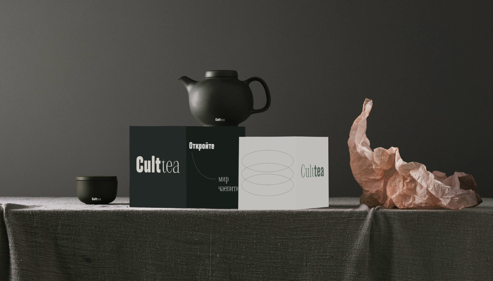
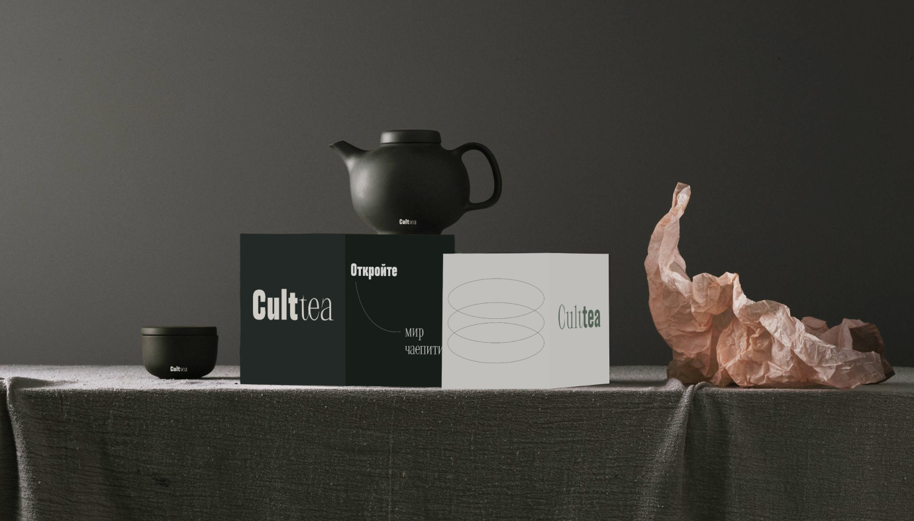
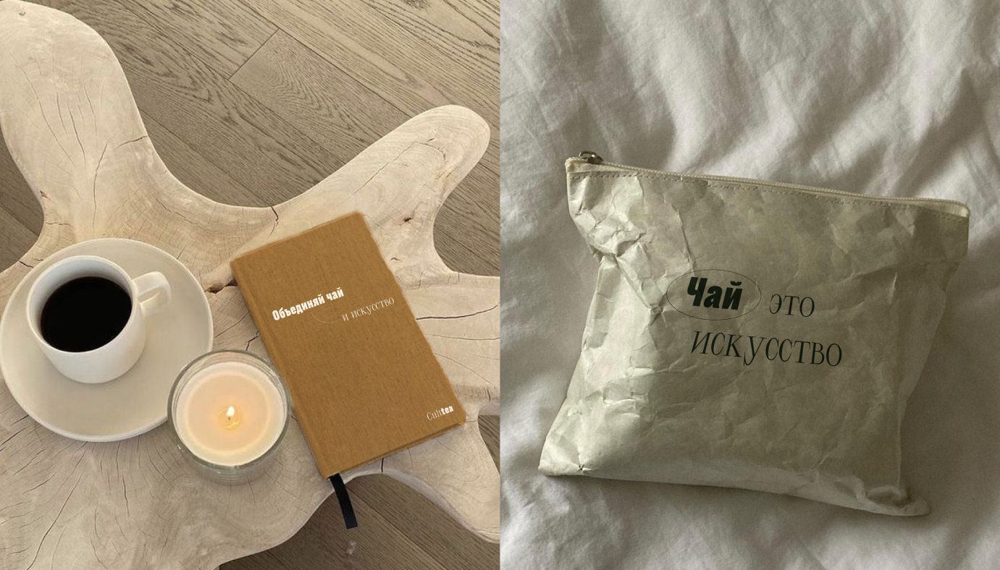
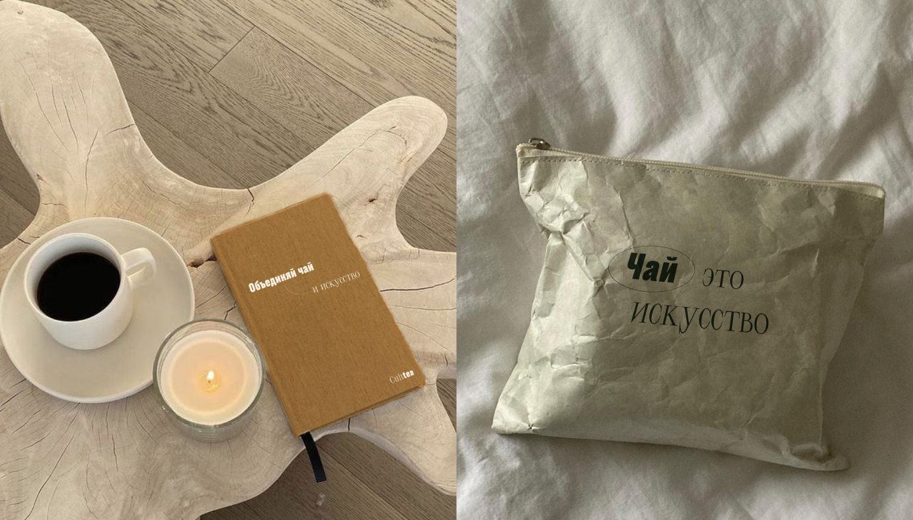

О бренде
Трансляция заботы и внимание к жизни через наш продукт и коммуникацию с читателем.
В основе бренда лежит любовь к национальной культуре, уважение к традиционным ценностям и желание показать актуальность чайных напитков.
Объединить в одно сообщество ценителей чайной церемонии, поддержать людей в поиске внутренней гармонии и продвигать традиционные и культурные ценности.
- Проверенная непредвзятая информация
- Мультикультурное сообщество людей
- Традиционные и национальные ценности, уважение
- истории культур и каждого человека отдельно
- Терапия и снижение тревоги
- Зоровье тела и души
Основа айдентики — игра с типографикой: утонченная актиква отсылает к традициям и богатой истории чайной церемении, а современный гротеск подчеркивает актуальность бренда и свежий взгляд на вековые традиции
Лого
В логотипе сочетаются широкие и узкие буквы как антитеза традиционного стиля и современного, нарочито подчеркивая их связь и гармонию.
лаконичный
комфортный
cпокойный
воздушный
свободный
внимательный
качественный
актуальный
традиционный
мультикульурный


Логотип всегда занимает 2 колонки в сетке на сайте и 4 колонки на плакатах и рекламе. Минимальный размер — 24 px.
У логотипа есть альтернативный вариант, который используется для анимации и фирменного мерча.


Цвет лого зависит от фона и должен быть контрастным (темный на светлом / светлый на темном).

Цвета
В основе сочетания двух основных монохромных цветов с кислотным зеленым лежит идея о классическом стиле в одежде, который получил в наше время новое осмысление и теперь часто используется с нестандартными яркими акцентами.

Типографика
выбор шрифтовЧтобы показать разнообразие людей и их характеров был выбран гротеск с разноширинными начертаниями. Это семейство Druk, разработанное Юрием Остроменцким, Ильей Рудерманом и Бертоном Хасеье. В пару к гротеску была выбрана модная акцидентная антиква. Для удобочитаемости самих статей используется спокойный Inter.

Сетка и композиция
в вебе

Для создания плакатов используется гибкая модульная сетка, основой служит принцип лесенки и достаточное количество свободного пространтва.
Фото и графика

Собираем композиции из покатых форм и местами добавляем обводку, если позволяет ситуация и смысл. Наклоняться могут только рамка и эллипсы, прямоугольные и квадратные изображения всегда устойчивые.
фотографии
Для рекламы и промо сервиса подбираются фотографии на спокойный фонах без лишних деталей. Внутри самих статей на заднем плане фотографий допускаются другие объекты (например, если это стоп-кадр из фильма)

оформление соц.сетей

Мерч
 
  
